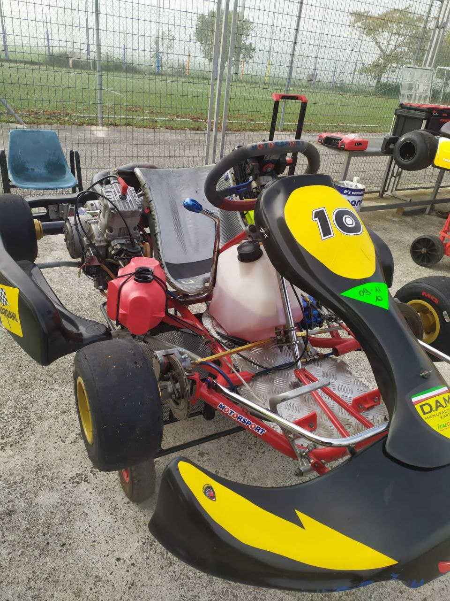
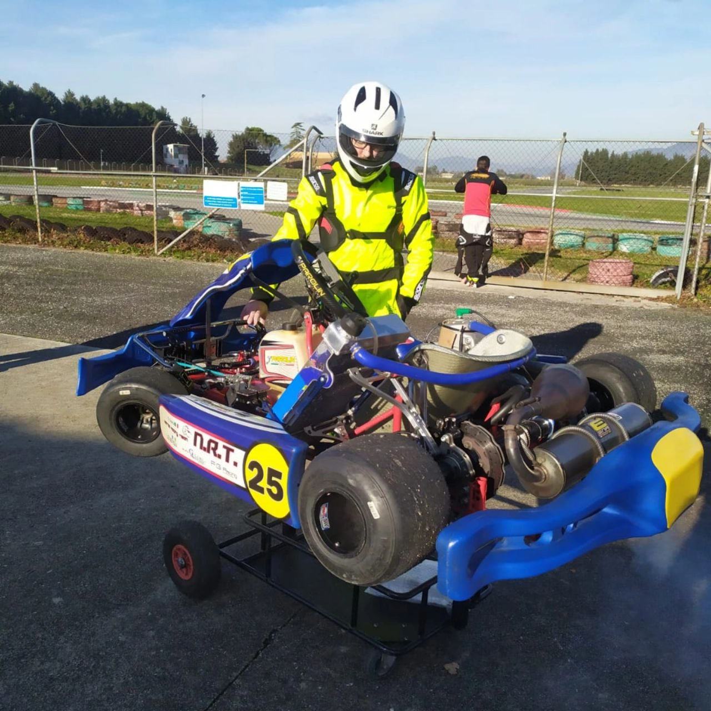
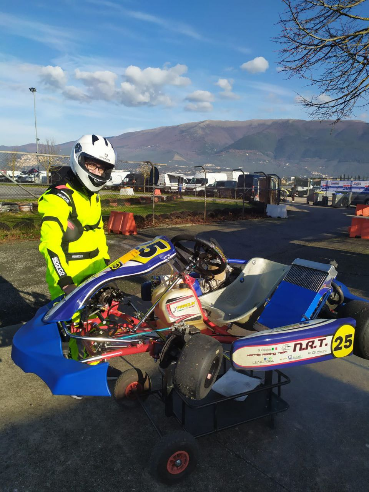

Non solo lavoro e studio.
Le mie passioni – in particolare i kart, il gaming e i motori – sono il modo in cui continuo a imparare, sbagliare e crescere anche fuori dall’ambito scolastico e professionale.

Karting
Il karting per me è una passione iniziata da poco, in modo del tutto amatoriale. Non ho ambizioni da pilota professionista: lo vivo come un percorso di apprendimento e divertimento.
Ho mosso i primi passi con un kart di circa 20 anni. Non era il mezzo più moderno o competitivo, ma mi ha permesso di capire le basi: come impostare le curve, come gestire il corpo e come sentire il kart che si muove sotto di me.
Situazione attuale
- Circa 1 anno di esperienza amatoriale.
- Attualmente utilizzo un kart più recente, non omologato per competizioni ufficiali, ma ideale per fare pratica.
- Lavoro soprattutto su costanza, precisione e sensibilità alla risposta del mezzo.



Cosa sto imparando in pista
Gestione delle curve
Sto imparando a impostare meglio le traiettorie, a essere più fluido nello sterzo e a capire quanto anticipare o ritardare l’ingresso in curva in base al grip e al tipo di curva.
Frenata e controllo
Una parte importante del mio allenamento è capire come frenare in modo progressivo, evitando blocchi e perdite di tempo, e come mantenere il kart stabile in ingresso e uscita.
Costanza piuttosto che tempo singolo
In questa fase non inseguo il “giro perfetto”, ma la costanza: avere più giri simili uno all’altro, con pochi errori e una guida pulita.
Gaming
Il gaming è una delle passioni che mi hanno avvicinato alla tecnologia. Oltre al lato di intrattenimento, mi ha aiutato a sviluppare riflessi, capacità di prendere decisioni rapide e collaborazione online.
Collegamento con l’informatica
La curiosità per “come funzionano le cose” mi ha portato a interessarmi a PC, hardware, configurazioni, performance e, da lì, allo studio dell’informatica in modo più strutturato.
Motori & tecnologia
Oltre al karting, seguo con interesse il mondo dei motori in generale: dalle auto alle competizioni, fino alle novità tecniche legate alla telemetria, ai sistemi di sicurezza e alle soluzioni elettroniche.
Perché è importante per me
Questa passione si collega naturalmente al mio percorso di studi: capire la parte elettronica, i sensori, i sistemi di controllo e l’integrazione tra hardware e software è qualcosa che ritrovo sia nello studio che nei miei interessi personali.
Contatti
Se vuoi parlarmi di karting, gaming, motori o semplicemente fare due chiacchiere su questi argomenti, puoi scrivermi qui:
- Email: gabrielescucchia@gmail.com
- Instagram: @gab.1rl